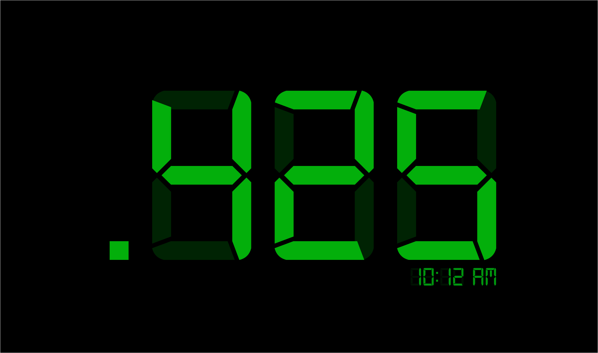

Proin semper quam sit amet nunc sagittis, in porta turpis sollicitudin. Nullam ut elit ac quam mollis auctor nec vel augue. Quisque non dignissim lorem. Etiam vitae hendrerit libero, id blandit eros. Praesent vel lorem lectus. Duis id egestas mi. Orci varius natoque penatibus et magnis dis parturient montes, nascetur ridiculus mus. Pellentesque vitae semper arcu.
Vivamus ac facilisis

World building

Ut suscipit, risus sit amet hendrerit euismod

Praesent vel lorem lectus
Ut suscipit, risus sit amet hendrerit euismod
Etiam vitae hendrerit libero, id blandit eros. Praesent vel lorem lectus. Duis id egestas mi. Orci varius natoque penatibus et magnis dis parturient montes, nascetur ridiculus mus. Pellentesque vitae semper arcu.
Personae

Ut suscipit, risus sit amet hendrerit euismod
Etiam vitae hendrerit libero, id blandit eros. Praesent vel lorem lectus. Duis id egestas mi. Orci varius natoque penatibus et magnis dis parturient montes, nascetur ridiculus mus. Pellentesque vitae semper arcu.
Textual prompts
User testing
Reflection
|
Mars Two Transit Course
@369-@697
Content
Structure
Learning outcomes
|
| Week | Topic 1 | Topic 2 |
|---|---|---|
| Week 1 |
Telling time
|
Health and hazards
|
| Week 2 |
Language
|
Symbols and icons
|
| Week 3 |
Planetary geography
|
Mars Two public public works
|
| Week 4 | Break | Break |
| Week 5 |
Mars One
|
Founding figures
|
| Week 6 |
Government
|
Civic involvement
|
| Week 7 |
Resource production
|
Resource reclamation
|
| Week 8 | Break | Break |
| Week 9 | Holidays | Home life |
| Week 10 | Routines | Arts and culture |